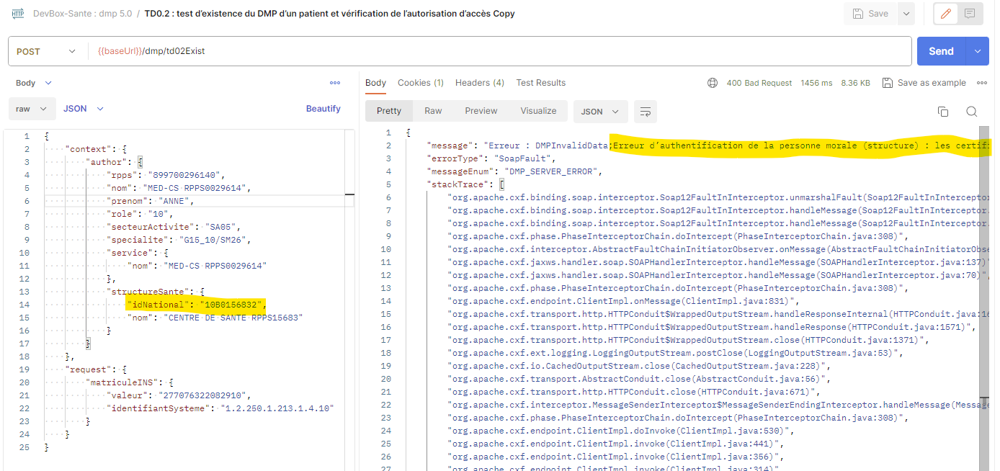
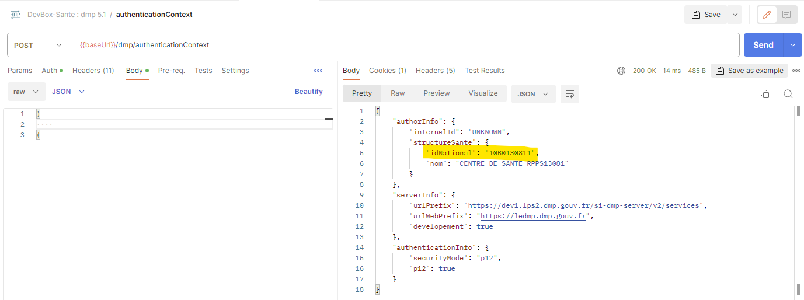
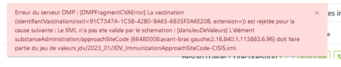

FAQ
Authentifications
[Indirecte] Erreur d’authentification de la personne morale
Cette erreur arrive quand l’identifiant de structure utilisée dans le contexte d’appel est incohérent avec celui du certificat :

Pour connaître l’identifiant du certificat P12 utilisé, vous pouvez utiliser l’endpoint /dmp/authenticationContext avec un body vide :

À l’aide de ces deux impressions écrans on voit bien que les deux identifiants structures sont différents. Comme ces deux identifiants sont deux identifiants Finess, la DevBox-sante ne peut pas ignorer l’identifiant passé dans le contexte au profit de celui du certificat p12 car cela perment de prendre en charge le mode EJ/EG
Les logs de la devbox-santé peuvent aider à diagnostiquer votre problème :
P12AuthenticationContextHandler : La structure (1.2.250.1.71.4.2.2.10B0156832) du contexte de Type FINESS est un possible FINESS_EG
P12AuthenticationContextHandler : Extraction du certificat les infos de structure sante pour id 10B0130811 de type FINESS
P12AuthenticationContextHandler : Extraction du certificat le nom de la structure : CENTRE DE SANTE RPPS13081
P12AuthenticationContextHandler : Structure du contexte (1.2.250.1.71.4.2.2.10B0156832) est diff?rente de la structure du certificat (1.2.250.1.71.4.2.2.10B0130811)
P12AuthenticationContextHandler : mode EJ/EG (10B0130811/10B0156832)
P12AuthenticationContextHandler : La structure (1.2.250.1.71.4.2.2.10B0130811) du certificat de type (FINESS) est un possible FINESS_EJ, mise ? jour des type et ajout de la structure du certificat dans la liste.
Aucun AuthorInstitution ne correspond à l’utilisateur du VIHF [Authentification Indirecte]
En authentification indirecte, La DevBox-Santé DMP récupère les informations de la structure dans le certificat P12 et surcharge avec ces informations la structure du contexte DMP de la requête.
Cette surcharge permet de respecter l’exigence de respecter le format du champ /Assertion/Issuer du VIHF défini dans “Volet Transport Synchrone pour Client Lourd” du CI-SIS de l’ANS, mais aussi, de respecter le champ Identifiant_Structure du VIHF défini dans le guide d’intégration du DMP (SEL-MP-037).
La structure du LegalAuthenticator du document doit correspondre à la structure du contexte qui est déduite du certificat P12. Il est donc conseillé de ne pas renseigner le legalAuthenticator pour un document afin de le récupérer automatiquement du contexte.
Comment distinguer les FINESS EJ des EG en test ?
En test, les numéros Finess des EJ (Établissements Juridiques) commencent généralement par “11B” tandis que les EG (Établissements Géographiques) par “10B” (par exemple votre FINESS 10B0309019).
“La carte utilisée est une carte de professionnel en formation (CPF), une erreur a été détectée "
Les professionnels en formation ne possède pas d’informations sur leur carte CPF concernant leur situation d’exercice. Il faut donc surcharger des informations dans le contexte:
author.structureSante.idNational(ex. “10B0156832”)author.specialite(ex. “G15_10/SM26”)author.secteurActivity(ex. “SA05”)
CPE de test retourne une structure introuvable
Problème connu, il faut demander au centre de service de rajouter la structure dans leur environnement.

CPE de test retourne un message d’erreur PS NON_ELLIGIBLE (carte commandé en 2023)
Effectivement c’est un problème connu du CNDA. Le sujet est en cours côté ANS. Il est pour le moment inutile de recommander des CPE qui auront le même problème (une date de fin d’activité caduque en base de données).
Identifiant Patient
Le champ Resource_id est incorrect :
Cas de la taille du matricule : 2770763220829^^^&1.2.250.1.213.1.4.10&ISO^NH
Vérifier la taille de l’INS, il manque généralement la clé. La bonne valeur de cet INS pour les transactions DMP est : 277076322082910
Cas de l’identifiantNomenclature : 277076322082910^^^&1.2.250.1.213.1.4.8&ISO^NH
Ici c’est l’OID de production (1.2.250.1.213.1.4.8) qui est utilisé pour un INS de test (Nessi Ruth). En effet, le téléservice INSi retourne à tort un OID de production pour les patients de l’environnement de qualification.
La bonne pratique est de conserver l’identifiantNomenclature retourner par le téleservice INS, exception faite de ceux retournés par l’environnement de qualification.
Rem : Cas particuler de Nathalie Desmaux qui a un OID de démonstration : ‘1.2.250.1.213.1.4.11’
Quel statut d’INS pour l’alimentation DMP ?
Une INS qualifiée sera nécessaire pour l’alimentation du DMP. A défaut, le DMP ne pourra pas être alimenté.
Source : INS_Guide implementation_V2_0.pdf
Alimentation
Le code ‘DOCPAT03’ ne fait pas partie du domaine d’affinité
Ces types de documents sont réservés aux patients, et ne doivent pas être utilisés par un LPS
Comme le dit l’exigence EX_2.1-1010 :
Les documents d’expression personnelle du patient ne peuvent pas être créés via l’interface LPS :
- classCode = 90, et les typeCode associés,
- et/ou les typeCode commençant par « DOCPAT ». Le document “Données de remboursement” ne peut être alimenté que par l’assurance maladie. Il ne peut donc pas être créé via l’interface LPS (classCode = 60, et typeCode = REMB). Le document « historique de vaccinations » est unique par DMP. Il est créé automatiquement par le SI DMP lors de l’ajout d’une première vaccination (soit via WebPS, soit lors de l’alimentation d’une première note de vaccination en LPS, soit par le patient lui-même via « Mon espace santé » ou Web Patient ou application mobile pour les DMP non associés à « Mon espace santé »). Il ne peut pas être créé via l’interface LPS (classCode = 52, et typeCode = 11369-6). Un fonctionnement spécifique est défini dans le chapitre 6.1.
Remplacement note de vaccination : « La date et le code CIS de cette vaccination sont deja presents dans le CVA complet” errorCode=“DMPFragmentCVAError” »,
Le DMP n’accepte pas 2 vaccins identiques à la même date (code CIS + date doivent être unique dans le carnet de vaccination).
Lorsque vous souhaitez remplacer une note de vaccination, le vaccin doit avoir le même identifiant pour qu’il puisse être mis à jour dans le carnet de vaccination.
Pour changer le numéro de lot ou la date de vaccination : la vaccination (pas la note de vaccination) doit avoir le même identifiant unique, ceci est indiqué dans l’exigence EX_2.1-2030.
EX_2.1-2030
Les identifiants des vaccinations (i.e. identifiant des entry/substanceAdministration) dans les notes de vaccination doivent être générés de manière « mondialement unique », via un UUID (voir https://fr.wikipedia.org/wiki/Universally_unique_identifier) dans l’attribut id/@root seulement.
Cet identifiant sert ensuite à retrouver la vaccination dans l’historique de vaccinations lors de sa mise à jour par le SI DMP. Il ne doit donc jamais rentrer en conflit avec l’identifiant d’une autre vaccination.
Quel est le lien entre numéro de version XDS et CDA ?
Réponse du SI-DMP (via le centre-de-service@sesam-vitale.fr)
La version des métadonnées XDS (fiche) n’est pas liée à la version d’un document (CDA). Un document peut avoir plusieurs version de métadonnée (fiche).
Le SI DMP positionne la première version de métadonnées à 1, puis les incrémente lors de changement de confidentialité (TD3.3)
Le remplacement d’un document par un autre (versionning) ne changera pas la version des métadonnées XDS de la nouvelle version du document (la nouvelle version des métadonnées du document remplaçant prendra donc la versionInfo/versionName=1 puisque soumis comme un nouveau document en remplacement d’un autre ; la version dans le CDA devrait par contre évoluer s’il s’agit bien du versionning d’un même document)
Note Vaccination : ApproachSiteCode ne fait pas partie du jeu de valeurs

Réponse MOA DMP :
Ce sujet est bien en visibilité du DMP, mais nous n’avons pas encore de date de résolution.
Au vu du contexte particulier dans lequel nous sommes actuellement, cela ne pourra en tout cas pas être corrigé avant le second trimestre 2025 au plus tôt.
En attendant, nous vous invitons à n’utiliser que les régions connues aujourd’hui du DMP : Fesse, Deltoïde gauche, Deltoïde droit, Cuisse gauche, Cuisse droite.
Si vous voulez renseigner une autre région présente dans le JDV_ImmunizationApproachSiteCode_CISIS, celle-ci sera refusée par le DMP aujourd’hui. Nous vous invitons alors à ne pas alimenter la région dans ce cas jusqu’à résolution côté DMP.